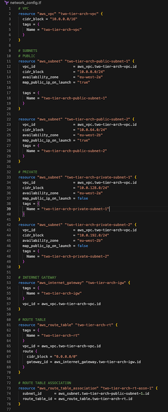
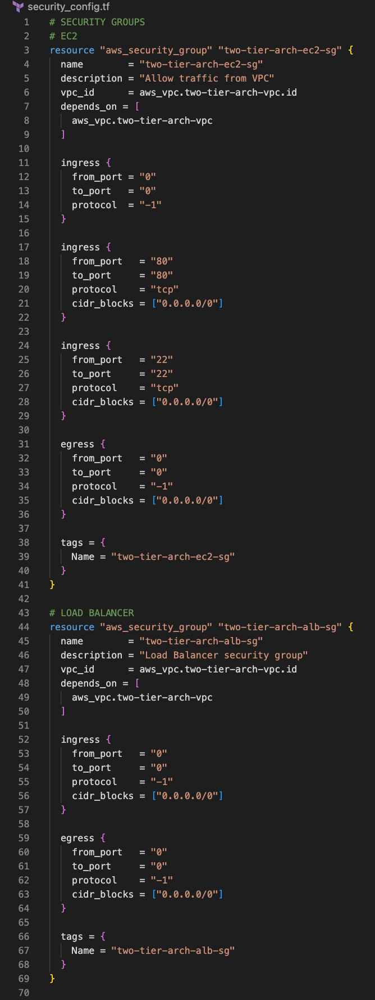
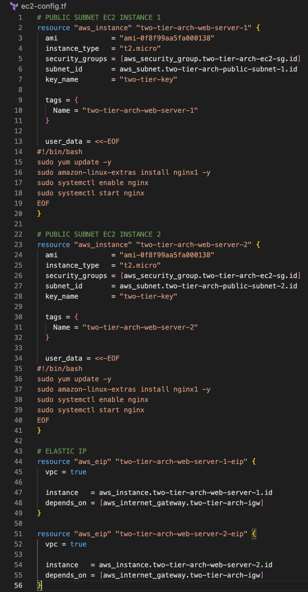

This is a two-tier architecture for deploying web applications on AWS. This setup separates responsibilities between a Presentation tier and a Data tier. This architecture is secure, scalable and fault-tolerant. It also promotes separation of concerns, making development and maintenance easier. In this project, I built the architecture using Terraform.
The Presentation tier, or Web Server Tier handles user requests and displays web pages. It has a load balancer to distribute traffic and web servers to display content.
The Data Tier stores and manages an application's data. It includes a database server, here an RDS MySQL database. It can also host storage options (such as EBS, S3, or EFS).
EC2, Elastic Load Balancing, RDS, Terraform
-
I created a file named 'provider.tf'. It is here, in a
'providers' statement, that you define the provider you want
to use and you can configure its settings, such as the AWS
region you are working in.
-
Next, I created a file with all of the network resources and
configurations. These resources included the VPC with a CIDR
block, then public subnets, configured to allow public IPs,
and private subnets, configured to not allow public IPs. Each
subnet has configurations for CIDRs and availability zones.
There is also an internet gateway, route tables and route
table associations. An Application Load Balancer and a target
group for it. And finally a subnet group for the RDS database.

-
I created a file for security configurations, including a
security group for EC2 instances and a security group for the
load balancer. The EC2 instance security group has inbound
rules on ports 80 for HTTP access from the internet, and port
22 for SSH access from your local machine. There was also a
security group for the MySQL database, allowing traffic
inbound and outbound on port 3306.

-
For the EC2 configuration file, I included the AMI ID of a
Linux instance. I included a bash script in the instance user
data, to install an NGINX web server on each of the instances.

-
The Database configuration file includes the standard database
configuration, including options such as Storage Type, Engine,
username and password, and the DB subnet group configured in
the Network file.